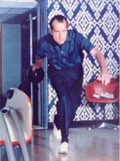

Oliver Atkins
From The Giant: The Definitive Obey Giant Site
From the George Mason University Library Special Collections & Archives[1]:
Oliver F. Atkins (1917-1977) was born February 18, 1917 in Hyde Park, Massachusetts. He earned a BA in Journalism from the University of Alabama in 1938, and accepted a position with The Birmingham Post as a staff photographer. Within two years he became chief photographer for the Scripps Howard-owned paper. In 1940, he joined The Washington Daily News where he remained until 1942 and the outbreak of World War II. During the war, he served as a correspondent and photographer for the American Red Cross covering the African campaign, the invasions of Sicily, southern Italy, southern France, and Germany. After the war, Atkins joined the staff of The Saturday Evening Post. As the Washington correspondent for The Post, he photographed many important leaders of the United States and the world. Among them were Harry S Truman, Dwight D. Eisenhower, Richard M. Nixon, John F. Kennedy and Robert F. Kennedy, Martin Luther King, Jr., Winston Churchill, Gamel Nasser, Nikita Kruschev, Josip B. Tito, and Jawaharlal Nehru. He was The Post's Far East correspondent in 1951, and also enjoyed a personal and working relationship with the magazine's famous illustrator, Norman Rockwell.
In 1969, Atkins became personal photographer to President Richard M. Nixon and Chief White House Photographer. Of his many images of Nixon, the series documenting the meeting of December 18, 1970 with Elvis Presley is perhaps the most famous and is the most requested. Among the many famous visitors to the White House captured on film by Ollie Atkins; musicians, actors, and politicians; were Nixon's favorite type - athletes. Members of the sporting world's elite met and were photographed with the president, including Brazilian soccer great, Pele.
After Nixon's resignation in 1974, Atkins became vice president of Curtis Publishing Company of Indianapolis and remained there until his death in 1977. Ollie Atkins' awards include the White House News Photographers' Association Grand Award, the Graflex All American Photo Contest Portrait Award, and the National Press Photographers' Association Personalities Award. Books by Ollie Atkins include Camera on Assignment (co-written with Charles Baptie, 1957) and The White House Years: Triumph and Tragedy (1977). He also contributed to William Safire's Eye on Nixon (1972).
Atkins' March, 1970 photo of Richard Nixon in the White House's bowling lane became an icon among bowling fans everywhere and remains a humorous example of the government's propensity for staged publicity photos. It ended up being featured prominently in the 1998 film The Big Lebowski, hanging on the Dude's wall. Finally, it served as the model for Shepard Fairey's 2002 print Lebowskifest.
|  |
{kind=link}
{kind=link}
© Copyright |
|---|
| This page contains an image or images of drawings, paintings, photographs, prints, or other two-dimensional works of art, for which the copyright is presumably owned by either the artist who produced the image, the person who commissioned the work, or the heirs thereof. It is believed that the use of low-resolution images of works of art for critical commentary on the work in question, the artistic genre or technique of the work of art, or the school to which the artist belongs on the English-language website thegiant.org, hosted on servers in the United States, qualifies as fair use under United States copyright law. |